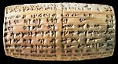

The Ziggurat of UrBetween 555 B.C. and 539 B.C., the Babylonian king Nabonidus rebuilt the ziggurat. When he rebuilt it, he made some changes.  Four cylinders were found at the site which described Nabonidus' rebuilding. This reconstruction of Nabonidus' ziggurat was created by the archaeologist C. Leonard Woolley. Click on different parts of the ziggurat to learn about them How did Woolley create his reconstruction?
|